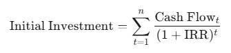

Understanding IRR and NPV: Precise Tools for Project Investment Decisions

For corporate finance managers and strategic investors, the decision to commit substantial capital to a project—be it launching a new product line, acquiring machinery, or entering a new market—is fraught with risk. Success hinges not just on forecasting revenues, but on accurately determining if the project will generate sufficient value to justify its cost. Two fundamental metrics, Net Present Value (NPV) and Internal Rate of Return (IRR), stand as the indispensable bedrock for making these critical capital budgeting decisions.
The Foundation: The Time Value of Money
Before calculating either NPV or IRR, one must grasp the principle of the Time Value of Money (TVM). A dollar received today is worth more than a dollar received tomorrow because the dollar today can be invested to earn a return. Both NPV and IRR rely on discounting future cash flows back to their present value, making them superior to simple methods like the Payback Period, which ignore the cost of capital and the timing of returns. The discount rate used in this calculation is typically the firm's Cost of Capital (often approximated by the Weighted Average Cost of Capital, or WACC), which represents the minimum required rate of return for any project.
1. Net Present Value (NPV): The Gold Standard of Value Creation
Net Present Value (NPV) is the difference between the present value of the cash inflows (expected revenues) and the present value of the cash outflows (initial investment and operating costs) over the project's life.
The Calculation and Decision Rule:
The NPV calculation uses the formula:
NPV=t=1∑n(1+r)tCash Flowt−Initial Investment
where r is the discount rate (Cost of Capital).
The decision rule is absolute:
- If NPV > 0: The project is expected to generate returns greater than the Cost of Capital, thus increasing shareholder wealth. Accept the project.
- If NPV < 0: The project destroys value. Reject the project.
- If NPV = 0: The project only covers the cost of capital. Indifferent, but typically accepted if strategic fit is high.
Strategic Advantage of NPV:
NPV is considered the gold standard because its result is expressed in dollars of value creation. This means it explicitly tells management how much wealthier the company will become if the project is accepted. Crucially, NPV follows the Value Additivity Principle: the NPV of two independent projects is simply the sum of their individual NPVs. This makes it the only reliable method for selecting the best combination of projects when capital is abundant.
2. Internal Rate of Return (IRR): The Breakeven Yield
The Internal Rate of Return (IRR) is the discount rate (r) that makes the Net Present Value of a project exactly equal to zero. In essence, it is the expected compound annual rate of return that a project is projected to yield.
The Calculation and Decision Rule:
The IRR is found by solving for r in the equation:
The decision rule uses the firm's required hurdle rate (Cost of Capital, k):
- If IRR > k: The project's expected return exceeds the cost of financing. Accept the project.
- If IRR < k: The project's expected return is insufficient. Reject the project.
Strategic Advantage of IRR:
The primary appeal of IRR is its intuitive nature: the result is presented as a percentage, which is easily comparable to lending rates, savings rates, or benchmark returns. Management often finds it easier to communicate and understand, as it represents the maximum error in the cost of capital estimate that the firm can tolerate before the project becomes unprofitable.
3. The Critical Conflict: When NPV and IRR Disagree
While NPV and IRR usually lead to the same accept/reject conclusion for independent projects, they can produce conflicting rankings when choosing between mutually exclusive projects (where choosing one automatically rejects the others). These conflicts typically arise under two conditions:
- Differences in Scale (Size Disparity): A project with a much smaller initial investment may have a very high IRR but a small NPV. Conversely, a large project may have a lower IRR but a much larger, and ultimately more valuable, NPV.
- The Strategic Lesson: Always favor the project with the higher NPV. A smaller percentage return on a much larger investment often creates more dollar value for the shareholders.
- Differences in Cash Flow Timing: When projects have significantly different patterns of cash flow (e.g., one project returns cash slowly and steadily, the other returns cash quickly), the IRR can be distorted.
The definitive strategic guidance is to rely on NPV. Since NPV measures the actual dollar value added to the firm's wealth, it provides the most accurate reflection of the shareholder wealth maximization goal. IRR is best used as a secondary, supplemental metric to gauge the project's margin of safety above the hurdle rate.
By mastering both NPV and IRR, and understanding the strategic implications of their results, investors can ensure that every major capital commitment is a deliberate step toward long-term value creation.
Resource: Hai Dang - Bachelor in Vin University